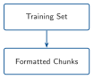
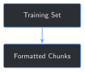

import re
TIMELINE_SECTION_PATTERN = re.compile(
r"TIME BREAKDOWN\n(?:FROM TO HRS PHASE CODE NPT OPERATIONS\n)?(.*?)\nTOTAL HRS", re.DOTALL
)
TIMELINE_ENTRY_PATTERN = re.compile(r"^(\d{2}:\d{2})\s+(\d{2}:\d{2})\s+([\d.]+)\s+(.*)", re.MULTILINE)
def parse_timeline_entries(text: str) -> list[dict]:
section = TIMELINE_SECTION_PATTERN.search(text)
if not section:
return []
body = section.group(1)
matches = list(TIMELINE_ENTRY_PATTERN.finditer(body))
entries = []
for i, match in enumerate(matches):
start = match.end()
end = matches[i + 1].start() if i + 1 < len(matches) else len(body)
raw_text = f"{match.group(4)} {body[start:end].strip()}".strip()
entries.append({"from_time": match.group(1), "to_time": match.group(2), "text": re.sub(r"\s+", " ", raw_text)})
return entries
entries = parse_timeline_entries(text)
print(f"{len(entries)} timeline entries found")
print(entries[-2])7 Formatting and Chunking a Training Set at Scale


Progress ███████░░░░░░ 7 / 13 · Estimated time: 30-40 min · Difficulty: 🟠 Intermediate
7.1 Learning objectives
By the end of this chapter, you will be able to:
- Extract a report’s full operational log — not just Chapter 2’s two summary fields — into one structured entry per logged time window
- Turn each entry into its own training example, producing many more, richer examples per report than Chapter 2’s fixed two
- Split (“chunk”) any entry too long for one training example into several, without truncating or corrupting a single word
- Detect and filter a real PDF-extraction artifact that would otherwise put corrupted text straight into training data
- Build a full training set from every quality-gated, non-held-out report at once, instead of running Chapter 2’s script by hand 74 times
7.2 Operational Problem
Sean, the production engineer, looks at Chapter 2’s output and asks the obvious question: “Two lines per report? These reports have a whole shift-by-shift log in them. Are we just throwing the rest away?”
He’s right to ask. Every report in this archive has a TIME BREAKDOWN section underneath the two fields Chapter 2 used — a real, multi-entry operational log, one row per logged time window, each with its own narrative. Chapter 2’s regex never looked at it. This chapter does, across all 74 reports Chapter 6’s gate and Chapter 2’s held-out reservation leave available for training.
7.3 Example: one report, ten training examples instead of two
Report Drilling_038 — the stuck-pipe day from Chapter 1 — has a TIME BREAKDOWN section with 10 separate logged time windows. One of them is the exact moment Chapter 1 quoted:
NoteOne TIME BREAKDOWN entry, turned into a training example
{
"instruction": "What happened on this well during this time window?",
"input": "Well: FORGE 16A [78]-32 | Report #38 | Date: 2020-11-26 | Time: 23:30-04:00",
"output": "Drill From 6,360' to 6,507', (147') Total , 32.6' feet per hour. WOB 20 TO 35k, Rotary 50, Torque 6,500, SPP 3200 -3400 GPM 560, DIFF 200 - 300psi Production Drilling Trips During the slide lost tool face and became assembly became stuck"
}Chapter 2 turned this same report into 2 examples. This chapter turns it into 10 — one per logged time window, each with real narrative detail Chapter 2 never touched.
7.4 Theory
TipEngineering Translation: chunking
Chunking means splitting one long piece of text into several smaller pieces that each fit inside one training example, instead of one oversized example or a silently truncated one. Done well, it’s invisible — like cutting a long pipe run into standard joint lengths; the pipe still does its job, it just now comes in handled pieces.
TipEngineering Translation: word-boundary splitting
Splitting text at a word boundary means never cutting in the middle of a word — only at the spaces between them. A naive character-count split (text[:300]) doesn’t know or care where words end; a word-boundary split builds each chunk up word by word, stopping just before the next word would push it over the limit.
7.5 Why not just use the whole report as one training example?
The simplest alternative to timeline-by-timeline chunking: skip parsing entirely, and use each report’s full raw text as a single training example. It’s tempting, and it’s worse for two concrete reasons. First, most of a report’s raw text is tabular data — casing, mud properties, pump specs, BHA components — that pdfplumber flattens into dense, confusing lines with no narrative value at all (Step 1’s exact code already skips past all of it). Second, and more importantly: one example per report means the model only ever sees 74 examples total, each one an undifferentiated wall of text mixing several unrelated time windows together. This chapter’s approach — one example per logged time window — produces 669 focused, individually meaningful examples from those same 74 reports, each one answering a specific question about a specific window of time.
7.6 Implementation
7.6.1 Step 1: Parse the TIME BREAKDOWN section into time-window entries
7.7 What problem are we solving?
Turn each report’s TIME BREAKDOWN table — several rows of FROM TO HRS ... OPERATIONS, with narrative text that can wrap across multiple lines — into a clean list of (from_time, to_time, text) entries.
7.8 Inputs
- One report’s full extracted text (from Chapter 2’s
extract_text)
7.9 Expected Output
A list of dictionaries, one per logged time window.
Running this exact code against Drilling_038 prints:
10 timeline entries found
{'from_time': '23:30', 'to_time': '04:00', 'text': "Drill From 6,360' to 6,507', (147') Total , 32.6' feet per hour. WOB 20 TO 35k, Rotary 50, Torque 6,500, SPP 3200 -3400 GPM 560, DIFF 200 - 300psi Production Drilling Trips During the slide lost tool face and became assembly became stuck"}7.10 What just happened?
The regex finds every line that starts with two times and an hour count, then treats everything up to the next such line as that entry’s narrative — which is what lets a real, multi-line entry (like this one) get captured whole, instead of stopping at the first line break. PHASE/CODE labels ("Production Drilling Trips" above) stay mixed into the narrative text rather than parsed into their own fields — pdfplumber’s column-flattening makes them genuinely ambiguous to separate reliably, and this chapter doesn’t pretend otherwise.
7.11 Production Reality
This regex assumes the same fixed TIME BREAKDOWN layout every report in this archive happens to share — the same kind of assumption Chapter 2 made about its two fields, and the same kind of assumption that breaks the moment a different operator’s report template shows up.
7.11.1 Step 2: Split long entries into word-boundary chunks
7.12 What problem are we solving?
Some entries are short ("Intermediate Drilling Lubricate Rig Rig Service"); others run past 900 characters. Every training example in this book stays a manageable size, so anything over the limit needs to become more than one example — without cutting through the middle of a word.
7.13 Inputs
- One entry’s
text, from Step 1 - A maximum length, in characters
7.14 Expected Output
A list of one or more chunks, each within the limit, that concatenate back into the original text exactly.
def chunk_text(text: str, max_chars: int = 300) -> list[str]:
words = text.split()
chunks, current, current_len = [], [], 0
for word in words:
added_len = len(word) + (1 if current else 0)
if current and current_len + added_len > max_chars:
chunks.append(" ".join(current))
current, current_len = [], 0
added_len = len(word)
current.append(word)
current_len += added_len
if current:
chunks.append(" ".join(current))
return chunks
long_entry = entries[-2]["text"] # the stuck-pipe entry, 237 characters -- under the limit here
print(chunk_text(long_entry, max_chars=100))Running this exact code prints:
["Drill From 6,360' to 6,507', (147') Total , 32.6' feet per hour. WOB 20 TO 35k, Rotary 50, Torque",
'6,500, SPP 3200 -3400 GPM 560, DIFF 200 - 300psi Production Drilling Trips During the slide lost',
'tool face and became assembly became stuck']7.15 What just happened?
chunk_text builds each piece up one word at a time, and only closes a chunk off before adding a word would push it past max_chars — never mid-word. At this chapter’s real setting, max_chars=300, this particular entry (237 characters) doesn’t need splitting at all; forced down to 100 here just to show the mechanism working on real text.
7.16 Production Reality
Splitting at word boundaries keeps words intact, but it can still split a sentence — or a single measurement like "WOB 20 TO 35k" — across two chunks, same as it did above. A more careful chunker would prefer to break at sentence or clause boundaries first, only falling back to a mid-sentence word split when a single sentence itself exceeds the limit. This chapter’s simpler version is honest about that trade-off rather than hiding it.
7.16.1 Step 3: Build the full training set, respecting Chapter 6 and Chapter 2
7.17 What problem are we solving?
Combine Steps 1 and 2 across every report — but only the reports Chapter 6’s gate actually passed, and never Chapter 2’s held-out report — and catch one more real problem along the way: a PDF-extraction artifact that would otherwise put corrupted text straight into training data.
7.18 Inputs
- Chapter 6’s
build_archive_records(), for status and file list - Chapter 2’s
HELD_OUT_REPORT
7.19 Expected Output
A .jsonl file with one example per line, plus counts of how many examples, chunks, and filtered artifacts resulted.
def contains_cid_artifact(text: str) -> bool:
return "(cid:" in text # pdfplumber's stand-in for an undecoded glyph
def build_timeline_examples_for_report(pdf_path):
text = extract_text(pdf_path)
fields = extract_fields(text)
context = f"Well: {fields['well_name']} | Report #{fields['rpt_num']} | Date: {normalize_date(fields['rpt_date'])}"
examples, artifacts_filtered = [], 0
for entry in parse_timeline_entries(text):
chunks = chunk_text(entry["text"])
for i, chunk in enumerate(chunks):
if contains_cid_artifact(chunk):
artifacts_filtered += 1
continue
time_label = f"Time: {entry['from_time']}-{entry['to_time']}"
if len(chunks) > 1:
time_label += f" (part {i + 1} of {len(chunks)})"
examples.append({"instruction": "What happened on this well during this time window?", "input": f"{context} | {time_label}", "output": chunk})
return examples, artifacts_filtered
def build_training_set_at_scale(full_dir=FULL_SET_DIR):
records = build_archive_records(full_dir)
examples, skipped, artifacts_filtered = [], [], 0
for record in records:
if record["file"] == HELD_OUT_REPORT:
continue
if record["status"] != "ok":
skipped.append(record["file"])
continue
report_examples, report_artifacts = build_timeline_examples_for_report(full_dir / record["file"])
examples.extend(report_examples)
artifacts_filtered += report_artifacts
return examples, skipped, artifacts_filtered
examples, skipped, artifacts_filtered = build_training_set_at_scale()
chunked = sum(1 for e in examples if "part" in e["input"])
print(f"Built {len(examples)} training examples (excluding {len(skipped)} unrecognized, 1 held out)")
print(f"{chunked} examples are chunks of a longer timeline entry")
print(f"{artifacts_filtered} chunk(s) filtered out for containing undecoded-glyph artifacts")Running this exact code prints:
Built 669 training examples (excluding 1 unrecognized, 1 held out)
125 examples are chunks of a longer timeline entry
3 chunk(s) filtered out for containing undecoded-glyph artifacts7.20 What just happened?
74 reports (76 total, minus the 1 unrecognized-format report Chapter 6 already flagged, minus the 1 held-out report Chapter 5 fine-tuned against) produced 669 training examples — more than 40 times Chapter 2’s 16, from the same archive, just by reading further into each report. 125 of those needed chunking; 3 chunks got filtered entirely for containing (cid:N) markers, which turned up in exactly the report with this chapter’s single longest entry (see Field notes).
7.21 Practical exercise
🟢 Beginner
Try it yourself: run python code/chapter_07/format_training_chunks.py from inside book/, then open datasets/training_examples/full_training_examples.jsonl and search it for Report #49 — the fishing-operations report from Chapters 2, 3, and 6.
You’ll know it worked when: the script prints Built 669 training examples, and report #49 has more than 2 entries in the file — direct evidence this chapter captured more of that day than Chapter 2 ever did.
7.22 Field notes
WarningField notes: a garbled sub-table hiding inside the longest entry in the archive
Query: the single longest TIME BREAKDOWN entry across all 76 reports, before any chunking.
Result: report #21’s 18:00–23:00 entry, 991 characters — nearly 4x the archive’s median entry length — contains a step-rate-test sub-table that pdfplumber couldn’t decode: "Time(cid:0)WOB(K) Rotary (cid:0)Differential (cid:0)ROP 19:40 (cid:0)30 40(cid:0)(cid:0)95...".
Why: the source PDF embeds a small results table inside this one entry — rows of timestamped WOB/rotary/differential/ROP readings from a step-rate test. Most of this archive’s tables extract cleanly (Chapter 6’s gate flagged only 1 of 76 reports as an outright extraction failure, and that was a different report using a different field layout entirely); this one specific embedded table apparently uses characters pdfplumber can’t map to real text, leaving (cid:N) placeholders instead — a narrower, quieter kind of extraction problem than a whole report failing outright.
Lesson: the longest, most information-dense entry in the whole archive is exactly the one most likely to contain something a simple extractor mishandles — and exactly the one chunking was already about to split into pieces anyway. Checking for corruption at the chunk level, right where the chunking already happens, catches it for free.
7.23 Challenge exercise
🟠 Intermediate
Challenge: this chapter’s chunk_text uses max_chars=300. Rerun the full pipeline with a smaller limit, 150, and see how many more (shorter) examples result. A reference solution is at code/chapter_07/challenge/challenge.py — on a real run, it produces 855 examples with 405 chunks, up from 669/125 at max_chars=300.
7.24 Key takeaways
- A report has more usable training signal in it than its two headline summary fields — this archive’s
TIME BREAKDOWNlog alone turned 74 reports into669examples, over 40x Chapter 2’s count from the same data. - Chunking at word boundaries keeps every word intact, at the cost of sometimes splitting a sentence or a single measurement across two examples — a real, named trade-off, not a hidden one.
- A quality check doesn’t happen once. Chapter 6’s gate checked the two summary fields; going one level deeper into each report’s narrative surfaced a real extraction artifact Chapter 6 never had a chance to see.
- Every training-set-building step in this book — Chapter 2’s, Chapter 6’s held-out and gate logic, and now this chapter’s — composes directly: this chapter imports and reuses them rather than duplicating their logic.
7.25 Repository files
| File | Purpose |
|---|---|
code/chapter_07/format_training_chunks.py |
Parses each report’s timeline into chunked training examples at archive scale |
code/chapter_07/challenge/challenge.py |
Reference solution: a smaller max_chars chunk size |
datasets/training_examples/full_training_examples.jsonl |
Generated output (not committed — regenerate by running the script) |
notebooks/chapter_07_explore.ipynb |
Interactive companion notebook |
CautionCHECKPOINT — Chapter 7
Tip✓ WHAT YOU BUILT
format_training_chunks.py — turns every quality-gated, non-held-out report’s full operational timeline into chunked training examples, saved to datasets/training_examples/full_training_examples.jsonl. Chapter 8 fine-tunes on this 669-example set — the “at scale” successor to Chapter 5’s 16-example proof of concept.
7.26 What can you do now that you couldn’t do before?
You can turn an entire report archive’s narrative content — not just its two most obvious fields — into a properly sized, artifact-checked training set automatically, instead of hand-extracting a couple of lines per report the way Chapter 2 did.
7.27 Suggested next step
Coming up in Chapter 8: 669 examples is a very different training run than Chapter 5’s 16 — long enough that a crash partway through would be a real loss, and large enough that “did it actually learn anything” needs more than eyeballing a loss number once at the end. Chapter 8 fine-tunes on this chapter’s full training set with checkpointing (so a failure doesn’t mean starting over) and experiment tracking (so training behavior is visible while it’s happening, not just after).